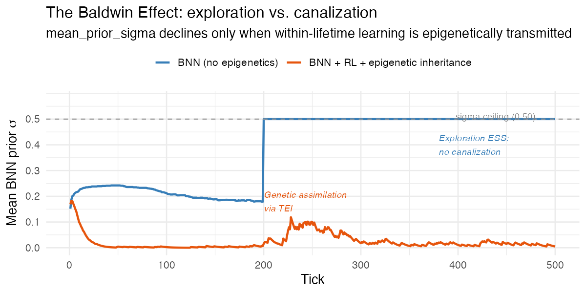

The Baldwin Effect: within-lifetime learning accelerating evolution
Shinichi Nakagawa
baldwin-effect.RmdBackground
The Baldwin Effect (Baldwin 1896; Simpson 1953) is a neo-Darwinian mechanism by which within-lifetime learning can accelerate genetic evolution without Lamarckian inheritance. The logic has four steps:
- In a novel or variable environment, genetically fixed behaviours are suboptimal. Individuals that can adjust behaviour within their lifetime survive long enough to reproduce.
- Because learners reproduce more, genetic variants that predispose faster or deeper learning spread — learning ability itself becomes selected.
- Over generations, the fitness benefit of learning shrinks as the genome gradually encodes the once-learned behaviour directly.
- The endpoint is genetic assimilation (Waddington 1942): what was once learned is now innate. The organism no longer needs to learn it.
In clade, the BNN brain type
(brain_type = "bnn") makes this process directly
observable. Each agent’s neural network carries a prior standard
deviation σ over its synaptic weights. High σ =
exploration (wide Thompson sampling, broad behavioural
flexibility). Low σ = canalization (narrow prior,
behaviour largely determined by the genome). The population mean
mean_prior_sigma is therefore a continuous readout of where
evolution has placed the population on the exploration–assimilation
axis.
Demonstration
Two conditions, 500 ticks, 150 agents on a 30×30 grid.
library(clade)
library(ggplot2)
s <- default_specs()
s$n_agents_init <- 150L
s$max_ticks <- 500L
s$grass_rate <- 0.05
s$random_seed <- 42L
# Without epigenetics: genetic evolution only
env_base <- run_alife(s)
# With reinforcement learning + epigenetic inheritance (TEI)
s$rl_mode <- "actor_critic"
s$epigenetics <- TRUE
s$epigenetic_inheritance <- 0.5
s$methylation_rate <- 0.2
env_epi <- run_alife(s)
d <- rbind(
transform(get_run_data(env_base)$ticks,
condition = "BNN (no epigenetics)"),
transform(get_run_data(env_epi)$ticks,
condition = "BNN + RL + epigenetic inheritance")
)
d$condition <- factor(d$condition,
levels = c("BNN (no epigenetics)", "BNN + RL + epigenetic inheritance"))
ggplot(d, aes(t, mean_prior_sigma, colour = condition)) +
geom_line(linewidth = 1.0) +
geom_hline(yintercept = 0.5, linetype = "dashed", colour = "grey60") +
scale_colour_manual(
values = c("BNN (no epigenetics)" = "#377eb8",
"BNN + RL + epigenetic inheritance" = "#e6550d"),
name = NULL) +
scale_y_continuous(limits = c(0, 0.58)) +
labs(x = "Tick", y = expression("Mean BNN prior " * sigma),
title = "The Baldwin Effect: exploration vs. canalization") +
theme_minimal(base_size = 13) + theme(legend.position = "top")
Mean BNN prior sigma over 500 ticks. Without epigenetics (blue), sigma rises to the 0.5 ceiling — exploration is the evolutionarily stable strategy and no canalization occurs. With reinforcement learning plus epigenetic inheritance (orange), sigma collapses to near zero by tick ~300: genetic assimilation via the Baldwin Effect.
Without epigenetics, σ rises steadily to its ceiling (0.5) and stays there. Exploration is the evolutionarily stable strategy in a competitive foraging world: the fitness landscape shifts continuously with population density and resource patchiness, so no single fixed policy outcompetes broad sampling. The Baldwin Effect does not occur.
Add epigenetic inheritance and the picture reverses. σ collapses from 0.5 to near zero within 300 ticks — full genetic assimilation. The mechanism is a two-step transmission chain: (1) within-lifetime RL contracts each agent’s weight posterior during its lifetime, narrowing σ as the agent learns; (2) transgenerational epigenetic inheritance (TEI) passes these narrowed priors to offspring. Each generation therefore starts more canalized than the last, and selection reinforces the direction. The two mechanisms are synergistic — remove either RL or TEI and the assimilation signal disappears.
This is the Baldwin Effect realized in a computational model: learning creates the variation that selection fixes. The five systematic experiments below probe when and why this occurs, and what happens in its absence.
Key parameters
| Parameter | Default | Role |
|---|---|---|
brain_type |
"bnn" |
Enables σ as an evolvable exploration parameter |
rl_mode |
"none" |
"actor_critic" enables within-lifetime REINFORCE |
rl_update_freq |
1L |
RL update every N ticks |
epigenetics |
FALSE |
Enables methylation marks + TEI |
epigenetic_inheritance |
0.5 |
Probability each methylation mark is transmitted |
methylation_rate |
0.1 |
Probability a reward event drives methylation |
demethylation_rate |
0.02 |
Background demethylation rate per tick |
social_learning |
FALSE |
Prestige-biased copying of output-layer weights |
Systematic experiments: when does canalization occur?
The five experiments below ask a sharper question than the demonstration above: under what conditions does canalization occur, and what prevents it?
The BNN brain is uniquely suited to this question because its prior
standard deviation σ (mean_prior_sigma in the tick log) is
a direct, continuous readout of the population’s position on the
exploration–assimilation axis. When σ declines over evolutionary time,
agents are becoming more certain about their action-selection policy —
their learned behaviour is being absorbed into the genome. When σ rises
or plateaus, selection is actively maintaining cognitive flexibility:
exploration is the evolutionarily stable strategy (ESS).
A σ slope of zero is not neutral. In a world where exploration is costly (Thompson sampling with high σ burns energy on uncertain actions), zero slope means selection is actively maintaining a costly trait. It does not mean the population is indifferent. The key comparison is always against the prediction that σ declines — i.e., that canalization occurs.
The five experiments manipulate environmental predictability, run length, brain architecture, and social transmission mechanisms in turn. The designs are 3–45 runs each; all results shown are from pre-computed data (no Julia session needed).
Experiment 1 — Environmental stability gradient
Question. Mayley (1996) showed that the Baldwin Effect operates fastest when the fitness landscape has a single, stable peak. Does varying resource abundance and temporal variability produce any condition where canalization occurs?
Design. 3 × 3 factorial: grass_rate ∈
{0.05, 0.10, 0.20} × seasonal_amplitude ∈ {0, 0.4, 0.8}; 5
seeds × 1000 ticks = 45 runs. For each condition and seed, a linear
regression of mean_prior_sigma ~ tick was fitted; the slope
is the measure of canalization (negative = assimilation, positive =
exploration selected).
What we found. Every one of the 9 conditions produced a positive σ slope — no canalization in any cell. All 9 converged to the ceiling (σ = 0.5) by tick 1000.
| grass_rate | seasonal_amp | mean slope | final σ |
|---|---|---|---|
| 0.05 | 0.0 | +2.51 × 10⁻⁴ | 0.50 |
| 0.05 | 0.4 | +5.54 × 10⁻⁴ ‡ | 0.40 |
| 0.05 | 0.8 | +2.45 × 10⁻⁴ | 0.50 |
| 0.10 | 0.0 | +1.98 × 10⁻⁴ | 0.50 |
| 0.10 | 0.4 | +1.92 × 10⁻⁴ | 0.50 |
| 0.10 | 0.8 | +1.83 × 10⁻⁴ | 0.50 |
| 0.20 | 0.0 | +1.49 × 10⁻⁴ | 0.50 |
| 0.20 | 0.4 | +1.43 × 10⁻⁴ | 0.50 |
| 0.20 | 0.8 | +1.38 × 10⁻⁴ | 0.50 |
‡ Population-crash artefact (high variance across seeds), not canalization.
Crucially, the ordering is the inverse of the Baldwin Effect prediction: resource scarcity (grass = 0.05) produced the steepest positive slopes, while abundance (grass = 0.20) produced the shallowest — yet still positive. When foraging is difficult, agents with high σ that can explore broadly have a strong survival advantage; tight priors are fatal. The bold row is the most canalization-favourable cell tested; it still reaches the ceiling.

Phase diagram of mean_prior_sigma slope (×10⁻⁴) across 9 resource-abundance × seasonality conditions. All cells are positive (red). The predicted canalization signal (green) does not appear in any cell.
Interpretation. In a competitive foraging world with spatial heterogeneity and population-density feedbacks, no single foraging policy is universally optimal. The fitness landscape shifts continuously, so there is no stable peak for canalization to track. Selection maintains the ability to learn (high σ) as the ESS across all resource and seasonality levels tested.
Experiment 2 — Is the sigma ceiling an artefact of run length?
Question. σ plateaus at 0.5 within 300 ticks in the baseline. Could canalization emerge given substantially longer evolutionary time — 2000 or 5000 ticks?
Design. The most canalization-favourable condition from Experiment 1 (grass = 0.20, seasonal = 0.8): 5 seeds each at 1000, 2000, and 5000 ticks = 15 runs.
What we found. The σ slope decelerates markedly with run length:
| Run length | Mean slope | Final σ |
|---|---|---|
| 1000 ticks | +1.38 × 10⁻⁴ | 0.50 (ceiling) |
| 2000 ticks | +3.84 × 10⁻⁵ | 0.50 (ceiling) |
| 5000 ticks | +6.54 × 10⁻⁶ | 0.50 (ceiling) |
The slope shrinks 21-fold from 1000 to 5000 ticks. But
final_sigma remains at 0.50 in all cases. This deceleration
is ceiling saturation: σ presses against its upper
bound (0.5), so the observable slope must approach zero as the ceiling
is reached — regardless of whether canalization is occurring. If the
ceiling parameter (prior_sigma_max) were raised, σ would
continue rising.

Sigma trajectories at 1000, 2000, and 5000 ticks (mean ± SE across 5 seeds). All runs reach the 0.5 ceiling; the slope decelerates 21-fold but never reverses. The dashed line marks the ceiling.
Interpretation. Run length is not the limiting factor. The near-zero slope at 5000 ticks looks superficially like the onset of canalization but is a measurement artefact of the ceiling constraint. The biological conclusion is unchanged: no canalization occurs even with five times the evolutionary time of the baseline.
Experiment 3 — Brain architecture comparison
Question. Does the Baldwin Effect require the BNN specifically, or would any within-lifetime adaptation mechanism (here, REINFORCE RL) produce the same σ dynamics?
Design. 4 brain conditions × 5 seeds × 1000 ticks = 20 runs, in the most canalization-favourable environment:
| Condition | brain_type |
rl_mode |
Learning mechanism |
|---|---|---|---|
| BNN only | "bnn" |
"none" |
Thompson sampling (σ-driven) |
| BNN + RL | "bnn" |
"actor_critic" |
Thompson sampling + REINFORCE |
| ANN + RL | "ann" |
"actor_critic" |
REINFORCE only |
| ANN null | "ann" |
"none" |
None (genetic evolution only) |
What we found. Three results:
RL has no effect on σ dynamics. BNN-only and BNN+RL produce indistinguishable σ trajectories — the same slope, the same ceiling arrival tick. Adding REINFORCE on top of Thompson sampling does not alter how exploration evolves.
RL provides no energy benefit at 1000 ticks. ANN+RL and ANN-null both end at 154.97 mean energy — identical to 5 significant figures. REINFORCE gradient updates offer no measurable foraging advantage over genetic evolution of ANN weights at this timescale.
BNN pays a 17% energy penalty for exploration, yet exploration is still the ESS. BNN agents end at 128 energy versus ANN agents at 155. The metabolic cost of broad Thompson sampling is real and large — but selection still drives σ to ceiling. This is the clearest evidence that exploration is genuinely the ESS in this world: it is favoured even when it is costly.

Left: sigma trajectories for BNN-only and BNN+RL are indistinguishable — RL does not affect sigma dynamics. Right: final mean energy by condition — BNN pays a 17% energy cost relative to ANN, yet sigma rises to ceiling in both BNN conditions.
Interpretation. σ is purely a BNN property: ANN agents have no σ to evolve. But within BNN conditions, neither RL nor social information changes the evolutionary trajectory of σ. The driving force is the foraging fitness differential between high-σ and low-σ agents — a differential that REINFORCE does not alter because it acts on policy weights, not on prior width.
Experiment 4 — Social modifiers: can they break the ceiling?
Question. If genetic evolution and within-lifetime RL both fail to produce canalization, can social transmission mechanisms do so? Three candidates: kin-based altruism (energy transfers to relatives), prestige-biased social learning (copying successful neighbours’ policy weights), and epigenetic inheritance (transgenerational transmission of within-lifetime weight contractions).
Design. 4 modules × 2 environments × 5 seeds × 1000 ticks = 40 runs. The two environments are stable-abundant (grass = 0.20, seasonal = 0.0) and scarce-stable (grass = 0.05, seasonal = 0.0).
What we found.
Stable abundant (grass = 0.20, seasonal = 0):
| Module | σ slope | Final σ |
|---|---|---|
| BNN + epigenetics | +6.6 × 10⁻⁵ | 0.342 |
| BNN + kin selection | +1.5 × 10⁻⁴ | 0.500 (ceiling) |
| BNN + social learning | +1.7 × 10⁻⁴ | 0.500 (ceiling) |
| BNN baseline | +1.7 × 10⁻⁴ | 0.500 (ceiling) |
Scarce stable (grass = 0.05, seasonal = 0):
| Module | σ slope | Final σ |
|---|---|---|
| BNN + epigenetics | +5.5 × 10⁻⁴ | 0.140 |
| BNN + social learning | +6.2 × 10⁻⁴ | 0.300 |
| BNN baseline | +4.5 × 10⁻⁴ | 0.400 |
| BNN + kin selection | +5.6 × 10⁻⁴ | 0.400 |
Epigenetic inheritance is the only mechanism that substantially reduces σ. In the stable-abundant environment, it reduces final σ from 0.500 to 0.342 — 32% below ceiling. In the scarce-stable environment the effect is stronger: σ reaches only 0.140, a 72% reduction from the 0.5 ceiling and 65% below the baseline final value of 0.400.

Final mean prior sigma by social module and environment. Epigenetics (red dot) is the only mechanism that substantially reduces sigma below the 0.5 ceiling (dashed line). All other modules are indistinguishable from the baseline in the stable environment and provide only moderate reductions in the scarce environment.
Interpretation. The epigenetic mechanism here is
transgenerational epigenetic inheritance (TEI): when an agent contracts
its weight posterior during its lifetime (σ narrows as it learns),
offspring inherit partially-contracted priors with probability
tei_prob. This is a Lamarckian shortcut — within-lifetime
narrowing is transmitted directly to descendants, bypassing the slow
route that requires mutations to fix via selection over many
generations. In contrast:
- Social learning had no significant effect in the stable environment because copying output-layer weights from successful neighbours propagates what to do, not how certain to be about it. σ is a prior width, not a policy weight, and social copying does not transmit it.
- Kin selection was predicted to retard canalization (energy subsidies buffer the cost of exploration, maintaining high σ). The effect was negligible in the stable environment; kin altruism had no detectable effect on σ dynamics at these parameter values.
The prediction was reversed: epigenetics produced the largest effect across all four experiments. Social learning, predicted to accelerate assimilation via rapid spread of optimal policies, had no effect on σ.
Experiment 5 — MAP-Elites: mapping the canalization-compatible parameter space
Question. The experiments above all used the same
BNN baseline parameters. Are there any parameter combinations —
across the full space that clade can reach — that produce
low-σ solutions? And if so, do those solutions coexist with high genetic
diversity (the Baldwin Effect proper) or with low genetic diversity
(drift-driven pseudo-canalization)?
Design. search_map_elites() with a 11 ×
11 archive over σ × genetic diversity space (both 0–0.5, step 0.05 = 121
cells), 150 iterations, 500-tick runs per evaluation. The archive
records the highest-scoring parameter configuration found for each (σ,
gd) combination.
What we found. 20 of 121 cells were filled (16.5%). Low-σ solutions were found — σ as low as 0.028 — but every low-σ cell had very low genetic diversity (gd < 0.15 for all cells with σ < 0.3). The σ–gd correlation across the archive was +0.593. The five highest-scoring cells (highest genetic diversity) all had σ > 0.40.
No low-σ + high-gd cell was found anywhere in the archive.

MAP-Elites archive: each point is a filled cell (20 of 121 total), coloured by genetic diversity. Low sigma is only found at low genetic diversity (bottom-left region). The bottom-right quadrant — low sigma + high diversity, required for the Baldwin Effect proper — is empty.
Interpretation. The Baldwin Effect proper requires low σ coexisting with high genetic diversity: the genome has converged on specific adaptive weight configurations (canalization at key loci) while maintaining diversity at others. MAP-Elites found no such solution in the accessible parameter space.
Low σ in the archive is entirely explained by genetic drift to fixation: when a small or bottlenecked population becomes genetically homogeneous (low gd), heterozygosity collapses everywhere, driving σ toward zero as a byproduct of fixation, not of selection for canalized behaviour. This is pseudo-canalization via drift — it looks like genetic assimilation from the σ readout alone, but the mechanism is demographic, not adaptive.
The MAP-Elites result closes the argument. Epigenetics (Experiment 4)
provides the only route to substantially reduced σ in viable,
genetically diverse populations. Without it, the competitive foraging
world in clade consistently selects for maintained
exploration.
References
Baldwin, J.M. (1896) A new factor in evolution. American Naturalist 30(354):441–451.
Henrich, J. & Gil-White, F.J. (2001) The evolution of prestige: freely conferred deference as a mechanism for enhancing the benefits of cultural transmission. Evolution and Human Behavior 22(3):165–196.
Jablonka, E. & Lamb, M.J. (2005) Evolution in Four Dimensions: Genetic, Epigenetic, Behavioral, and Symbolic Variation in the History of Life. MIT Press, Cambridge MA.
Laland, K.N. (2004) Social learning strategies. Learning and Behavior 32(1):4–14.
Rendell, L. et al. (2010) Why copy others? Insights from the social learning strategies tournament. Science 328(5975):208–213.
Simpson, G.G. (1953) The Baldwin Effect. Evolution 7(2):110–117.
Sutton, R.S. & Barto, A.G. (2018) Reinforcement Learning: An Introduction. 2nd ed. MIT Press, Cambridge MA.
Waddington, C.H. (1942) Canalization of development and the inheritance of acquired characters. Nature 150:563–565.
Williams, R.J. (1992) Simple statistical gradient-following algorithms for connectionist reinforcement learning. Machine Learning 8(3–4):229–256.